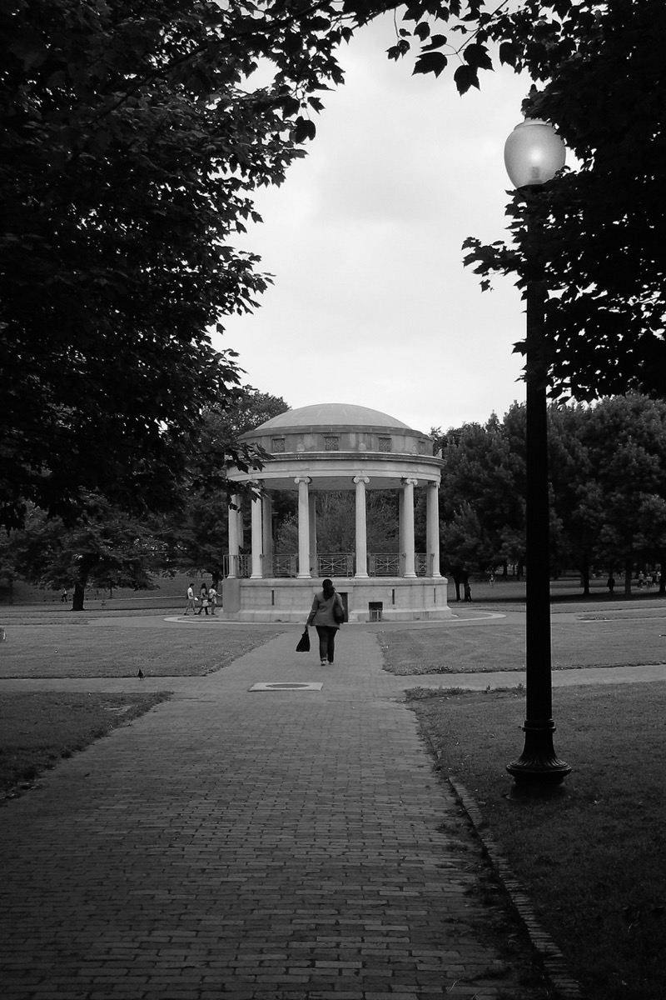
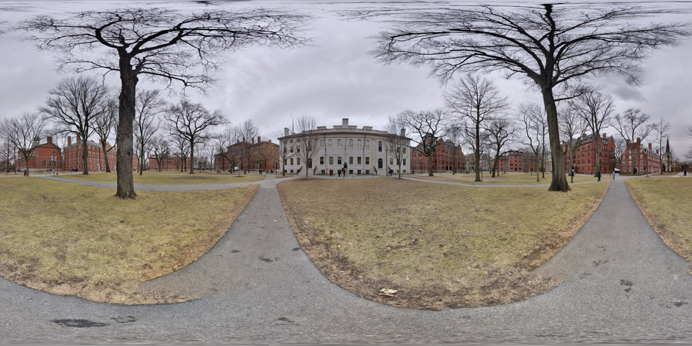
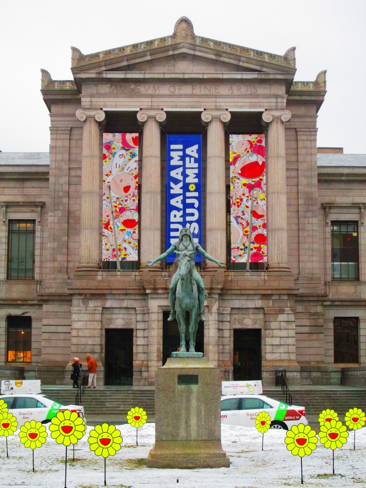
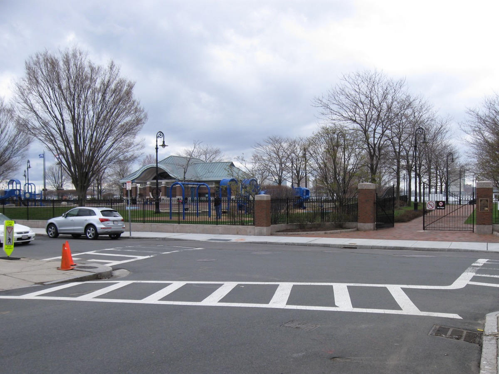
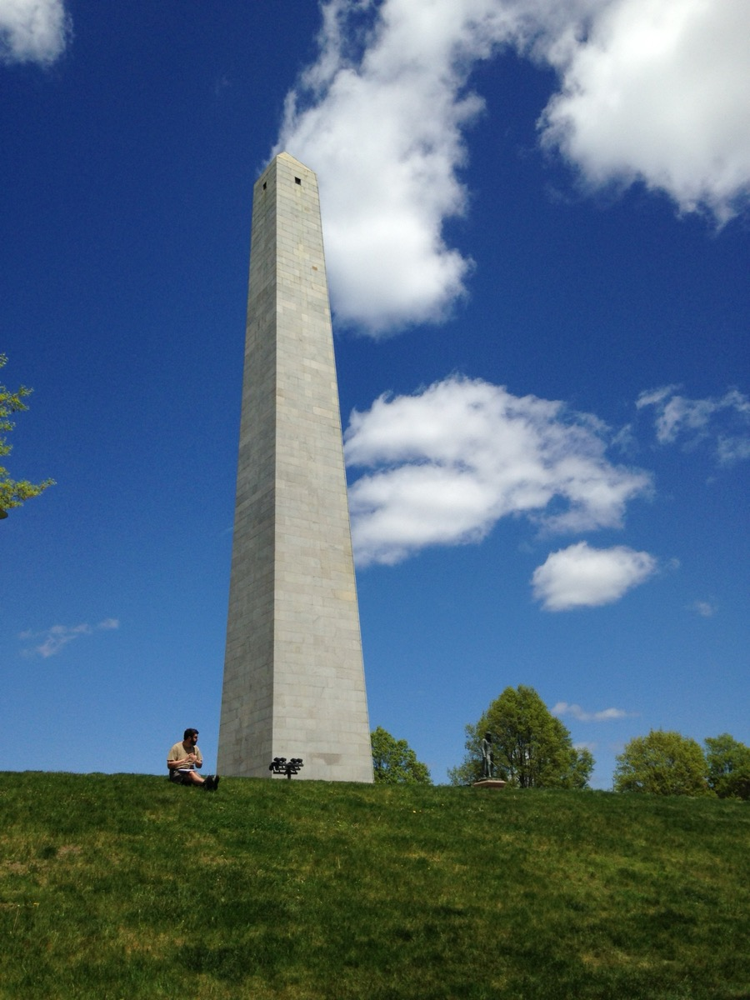
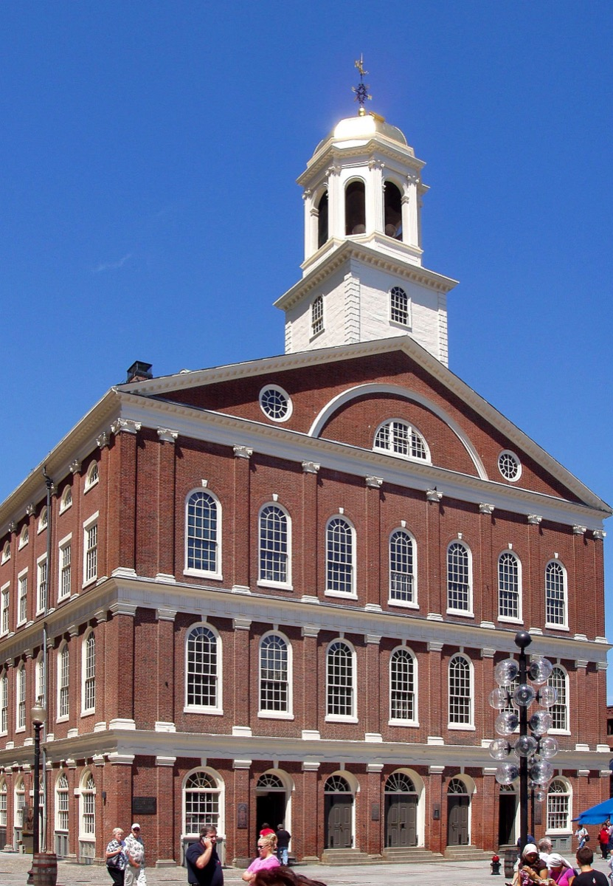
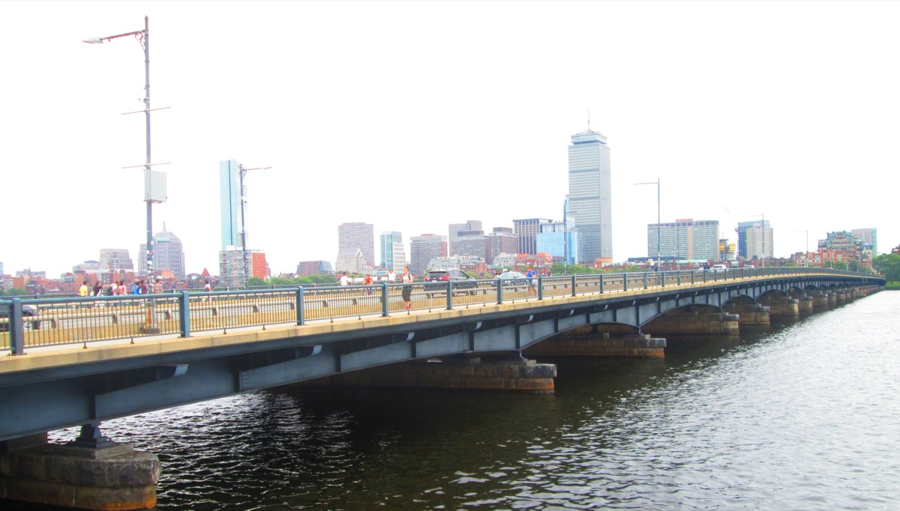

The short answer
Five adventures, one afternoon
The fastest 250 points in Boston. Go in order, all walkable.
01 · Adventure list
The 27 free adventures
Twenty are open any day for 50 points. Six are timed, so they're worth 100. One is rare, worth 250. Look for the yellow tag.
Walk the Freedom Trail +50
Boston Common, 139 Tremont StT Park Street (Red, Green)Always free

A red brick line linking 16 historic sites from Boston Common to the USS Constitution. Start at 8am, skip the paid houses, and finish in the North End with a cannoli.
Public Garden, the Common and Beacon Hill +50
Beacon & Charles StT Arlington (Green)Always free

The country's oldest public park, the Ducklings statues, and a lagoon swan boat photo. Cross Beacon Street after for Acorn Street's gas lamps.
Bates Hall at the Boston Public Library +50
700 Boylston StT Copley (Green)Mon–Sat, hours vary

The 1895 reading room with green lamps, open to anyone, no card required. See the Sargent murals upstairs while you're in.
Sunset on the Charles River Esplanade +50
Fiedler Footbridge, Arlington StT Charles/MGH (Red)Always free

Three miles of riverside park facing west, so it gets every clear sunset. Claim the dock by the Hatch Shell.
Acorn Street and a walk through Beacon Hill +50
Acorn St, off Charles StT Charles/MGH (Red)Public street

The most photographed street in America, gas lamps and all. Loop back down Charles Street's antique shops.
Harvard Yard and the Harvard Art Museums +50
32 Quincy St, CambridgeT Harvard (Red)Free daily, museums Tue–Sun 10–5

Walk the Yard, then three museums under one glass roof, free since 2023. Add the Square's bookstores after.
The ICA on a free Thursday night +100
25 Harbor Shore DrT Courthouse (Silver)Free Thu 5–9pm

Contemporary art in a glass box over the harbor. Come for the last hour, when the crowd thins and the water view is best.
Museum of Fine Arts, Wednesday evening +100
465 Huntington AveT Museum of Fine Arts (Green E)Wed after 4pm, pay what you wish

Too big for one visit, so pick a wing: Art of the Americas, the Japanese temple room, or the Egyptian galleries.
Walk the Boston Harborwalk +50
ICA to Christopher Columbus ParkT Courthouse (Silver)Always open

Two miles from the ICA past Fan Pier and Long Wharf to the North End. Go at dusk for the harbor lights.
Skyline view from Piers Park +50
95 Marginal St, East BostonT Maverick (Blue)Open daily

The best free skyline view in the city, straight across the harbor, one Blue Line stop away. LoPresti Park nearby has the same view with fewer people.
Castle Island and Fort Independence +50
2010 William J Day BlvdT Broadway, bus 9/11 (Red)Fort tours summer weekends

A granite fort, a beach, and a two-mile loop around Pleasure Bay. Cheap hot dogs at Sullivan's after.
Arnold Arboretum +50
125 Arborway, Jamaica PlainT Forest Hills (Orange)Dawn to dusk

281 free acres. Climb Peters Hill for the skyline view, or time it for Lilac Sunday in May.
Bunker Hill Monument and the USS Constitution +50
Monument Square, CharlestownT Community College (Orange)Climb free, seasonal hours

Climb 294 steps for the harbor view, then board the USS Constitution nearby. Bring photo ID for the ship.
Longfellow Bridge at night +50
Charles/MGH to Kendall SquareT Charles/MGH (Red)Always open

A 15-minute round trip with the skyline reflected in the river. Best after dark.
The North End +50
Hanover St and the streets off itT Haymarket (Orange, Green)Best in the evening
Boston's Italian district, nearly 100 restaurants in half a square mile. Walk it hungry.
Faneuil Hall's Great Hall and Haymarket +50
4 S Market StT Government Center (Blue, Green)Great Hall free

Most people never go upstairs. Go upstairs for the free ranger talks, then Haymarket's produce stalls on Friday or Saturday.
Harvard Square, Cambridge +50
Around Harvard stationT Harvard (Red)Lively until late

Bookstores open until 11pm, street musicians, and the Widener steps. The river is five minutes south.
SoWa Open Market +100
460 Harrison AveT Tufts Medical Center (Orange)Sundays 11–4, May–Oct
200 vendors, a farmers market and food trucks in an old power station. Sundays only, so plan around it.
Back Bay and Newbury Street +50
Newbury St, Arlington to Mass AveT Arlington (Green)Shops 10–7

Victorian brownstones, the Commonwealth Avenue Mall, and window shopping the whole way down.
Free concerts and movies at the Hatch Shell +100
47 David G Mugar WayT Charles/MGH (Red)Summer Wed and Fri evenings

Landmarks Orchestra Wednesdays, movies Fridays, fireworks on the Fourth. Come early for a spot on the lawn.
The skyline from Fan Pier +50
Fan Pier Park, SeaportT Courthouse (Silver)Always open

Faces Downtown across Fort Point Channel, the best close-up of the lit skyline in the city.
Free trivia nights +50
Bars in Allston, Somerville and CambridgeMost weeknightsFree to play
Dozens of bars run pub trivia most weeknights, no cover. Show up with a team name.
Boston Common tree lighting +100
Boston Common, near Tremont StT Park Street (Red, Green)Early December
Free music and fireworks when the tree goes up. Frog Pond skating costs extra; watching is free.
Harvard Bridge and the Smoots +50
Mass Ave over the CharlesT Hynes (Green)Always open

Marked in "Smoots," a unit MIT students invented in 1958. A ten-minute walk with river views both ways.
Isabella Stewart Gardner Museum +250
25 Evans WayT Museum of Fine Arts (Green E)Free on your birthday

A Venetian-style palazzo around a flowering courtyard, with the empty frames from the 1990 heist still on the walls. Bring ID; this one's once a year.
MIT Museum +100
314 Main St, CambridgeT Kendall/MIT (Red)Free last Sunday of the month
Then walk the Longfellow Bridge back at dusk for the best free skyline walk in town.
Boston Athenaeum, first floor +50
10½ Beacon StT Park Street (Red, Green)Free public floor, Tue–Sat
One of the oldest independent libraries in the country. The public floor is free; the reading rooms above need a member.
02 · Timed adventures
Only on certain days, so they pay more
| When | Where | Note |
|---|---|---|
| Wednesday · 4pm+ | Museum of Fine Arts | Pay what you wish |
| Thursday · 5–9pm | The ICA | Free entry |
| Sunday · 11–4, May–Oct | SoWa Open Market | Sundays only |
| Summer · Wed & Fri evenings | The Hatch Shell | Concerts & movies |
| Early December | Common tree lighting | One night only |
| Last Sunday | MIT Museum | Free entry |
03 · Free by season
Free things to do in Boston by season
| Season | Free highlights |
|---|---|
| Spring (Mar–May) | Lilac Sunday at the Arboretum, Esplanade cherry blossoms, Marathon spectating, SoWa opens in May. |
| Summer (Jun–Aug) | Hatch Shell concerts and movies, Fourth of July fireworks, North End feasts, Harborwalk sunsets. |
| Fall (Sep–Nov) | Foliage on the Esplanade and Commonwealth Ave Mall, Head of the Charles Regatta in October. |
| Winter (Dec–Feb) | Tree lighting on the Common, Copley Square lights, free museum nights, First Night on New Year's Eve. |
04 · Getting around
Getting around Boston for free (or close to it)
- Most of this list is walkable: Downtown to the North End is 10 minutes, Copley Square 20.
- The subway is $2.40 a ride; a 7-day pass is $22.50.
- Buses 23, 28 and 29 through Roxbury, Dorchester and Mattapan are fare-free.
- The Long Wharf to Charlestown ferry costs a subway fare and is the cheapest harbor cruise in town.
- Bluebikes is $2.95 a ride.
05 · Rewards
Turn your adventure into currency
Points unlock tiers. Tiers unlock rewards at partner venues. That's the whole game.
| Points | Tier | What you get |
|---|---|---|
| 350 pts | First things first | Your first partner reward unlocks: a small freebie at a participating cafe or bar. |
| 1,000 pts | Knows the city | Bigger rewards at partner venues, plus a badge on your profile. |
| 1,850 pts | Did it all for free | Every adventure on this page. The top partner rewards, and bragging rights. |
FAQ
Free Boston: common questions
What is the best free thing to do in Boston?
Walking the Freedom Trail: 2.5 miles, 16 historic sites, two to three hours.
Which Boston museums are free?
Harvard Art Museums, every day. The ICA, Thursdays 5–9pm. The MFA, pay-what-you-wish Wednesdays after 4pm. The MIT Museum, last Sunday of the month. The Gardner, on your birthday.
Is Boston walkable?
Yes. Downtown, the North End, Beacon Hill, Back Bay and the Seaport are all within a 40 minute walk.
Is there free public transit in Boston?
The subway is $2.40 a ride, but buses 23, 28 and 29 are fare-free. The Charlestown ferry from Long Wharf costs the same as the subway.
What can you do in Boston for free in winter?
The library, free museum nights, Faneuil Hall's Great Hall, and the Common tree lighting in December.
How do the points work?
Check in at a spot in the no bad days club app and the points go to your account. Spend them on rewards at partner venues around Boston.